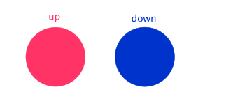

Spin and Domains
I sing, You sing, We all sing for Ising
2016-03-27
One of the simplest physical models has only two states, either it's pointing up or it's pointing down.

This might be electrons with their spin pointing one way or another, or atoms aligned with a magnetic field, or larger components. Now, the tricky thing in physics is that when you start getting to very fundamental levels, a lot of common language stops having meaning. What does up mean in space, for example? Down we are all aware means the enemy gate. This is not so silly a metaphor though! The Ising Model takes these bare binary-systems and defines their interactions by their orientation relative to their neighbors. So for a lone component, up and down are meaningless.
but if we had two, we can fiat that there's some interaction, simplest being $&U=-\mu s_ns_{n+1}&$ which means if two adjacent components differ in spin, they're at positive energy levels, $&(-\mu)*(-1)*(1)=\mu&$. However, if they are pointing the same way, they are negative in energy $&(-\mu)*(-1)*(-1)=(-\mu)*(1)*(1)=-\mu&$. This results in an interesting symmetry we'll visit later.
Cool, so we've described our pieces and how they interact with each other. How do they evolve in time? Well, it's typical that enough of these are being talked about that statistical mechanics gets brought into the fray. This means that we're going to kind of toss a weighted coin to find out what state it's in next. The weighting is done based on the energy of each outcome. If being spin up has the same energy associated with it as being spin down, then both states are equally as likely. But when there's an energy difference, the lower energy state will be preferred, and the strength of that preference is based on the temperature that the system is in contact with and the size of the energy difference. This probability calculation is done rigorously with what's called ensembles of various levels of canonical-yness. This problem where we allow the total energy of our collection of spins to vary calls for the canonical ensemble. Which since our spin has 2 states, up and down, can be written as these two expressions, $&P(up)=\frac{e^{-U_{up}/\tau}}{e^{-U_{up}/\tau}+e^{-U_{down}/\tau}}&$ and $&P(down)=\frac{e^{-U_{down}/\tau}}{e^{-U_{up}/\tau}+e^{-U_{down}/\tau}}&$ You can see by inspection that they add up to one, which is what you expect as our spins can't point left by definition. You can also see that as temperature gets much larger than the coupling energy, it approaches the fair coin toss case again, even though there is an energy difference between the states. Now, how the system behaves when it's cooler and the preferences for alignment are stronger is interesting. Play around with the demonstration below.
You may have noticed that as you dropped the temperature lower, a random field of noise turns into distinct patches ups, downs and even though it wasn't initially an option, gradients between the two. Additionally these patches are moderately persistent over time despite flipping back and forth. These regions are analogous to the magnetic domains in permanent magnets, or domains in general as crystals and solids form.
So remember when I talked earlier about how when considered alone, our spins had no distinction between up and down? Well, if we are talking about things like electrons or nuclei, the way those particles interact with magnetic fields now introduces external sense of up and down. A negative magnetic field would make down states intrinsically lower energy, and the same for a positive magnetic field and up states. Even a very small field can have large impact. In broad strokes, this is known as symmetry breaking and leads to interesting phenomenon. You can play around with how the magnetic field impacts the formation of domains in the demo below.